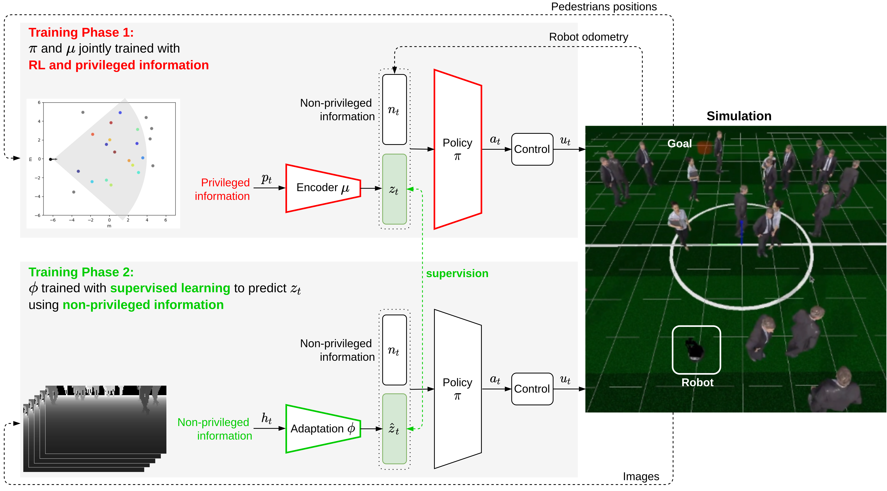
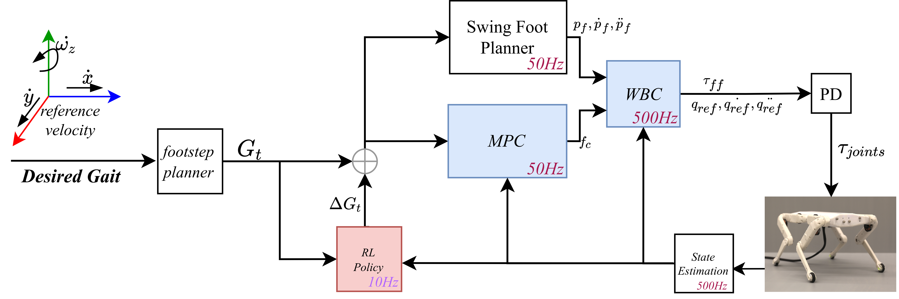
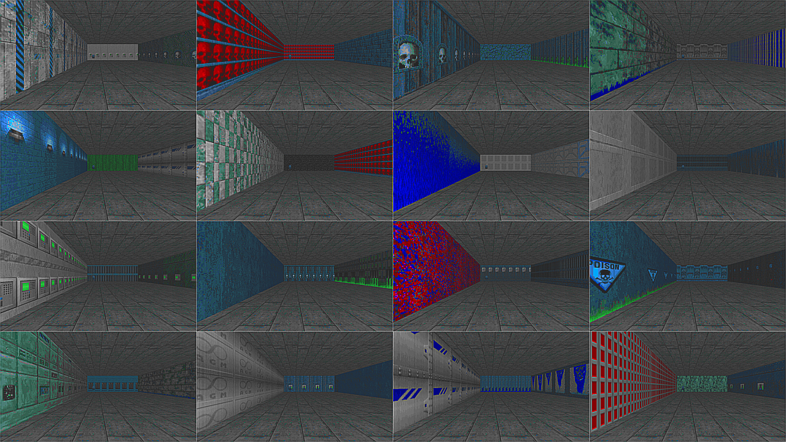

|
In 2023, I obtained a Ph.D. in robotics and computer science from the National Institute of Applied Sciences (INSA) in Toulouse. I did my Ph.D. thesis at Naver Labs Europe and the Gepetto team at LAAS/CNRS. The main focus of my work revolves around learning control policies for quadruped locomotion. I am supervised by Philippe Soueres (LAAS) and Tomi Silander (NaverLabs Europe). I recieved my B.Sc from the University of Balamand in Lebanon in Electrical Engineering and my M.Sc. in data science at the Grenoble Institute of Technology INP. During my master's thesis, I worked under the supervision of Cordelia Schmid on imitation learning for manipulation skills from visual input. After that I joined the robot navigation team in NaverLabs Europe as a research engineer working on the topic of robot navigation for indoor and crowded environments. Then, in my Phd I worked with the Solo quadruped and the MIT's MiniCheetah. I designed, implemented and transfered learned locomotion policies with reinforcement learning for both robots. I recently started a new as a Robotics Machine Learning Engineer at Enchanted Tools. Email / CV / Google Scholar / Youtube / Github |
{kind=link}
|
I am interested in studying the role of machine learning in robotic control and perception. I prefer working with real robots and deploying learned policies in the wild. I want to use robots to push the limits of the current state of AI algorithms. |

|
Michel Aractingi, Pierre-Alexandre Leziart, Thomas Flayols, Julien Perez, Tomi Silander, Philippe Soueres IEEE Humanoids, 2023 paper bibtex video A hierarchical approach for learning locomotion policies where several aspects of the low-level behaviour can be comanded. |

|
Michel Aractingi, Pierre-Alexandre Leziart, Thomas Flayols, Julien Perez, Tomi Silander, Philippe Soueres Scientific Reports, 2023 paper bibtex video A deep reinforcement learning approach to learn joint-angle control for the solo12 quadruped with a state estimation network. |
|  |
Gianluca Monaci Michel Aractingi, Tomi Silander, RSS 2022, Nominated for Best Paper Award paper bibtex video Learning navigation policies in densely crowded environments. |
|  |
Michel Aractingi, Pierre-Alexandre Leziart, Thomas Flayols, Julien Perez, Tomi Silander, Philippe Soueres Preprint, 2021 paper bibtex We propose to augment the model-based controller of the solo12 quadruped with a policy that modifies the gait sequence learned with deep reinforcement learning. |
|  |
Michel Aractingi, Christopher Dance, Julien Perez, Tomi Silander, ICML 2019 Workshop RL4RealLife paper bibtex We study the generalization ability of visual navigation agents trained with deep RL. We propose a regularization term to improve their generalization ability. |
|
website's template credit goes to Jon Barron |